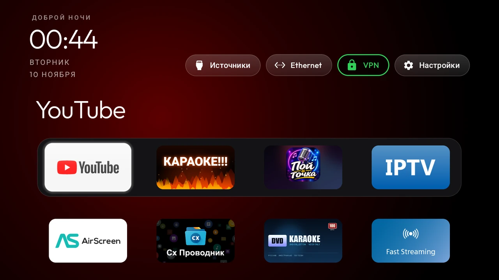
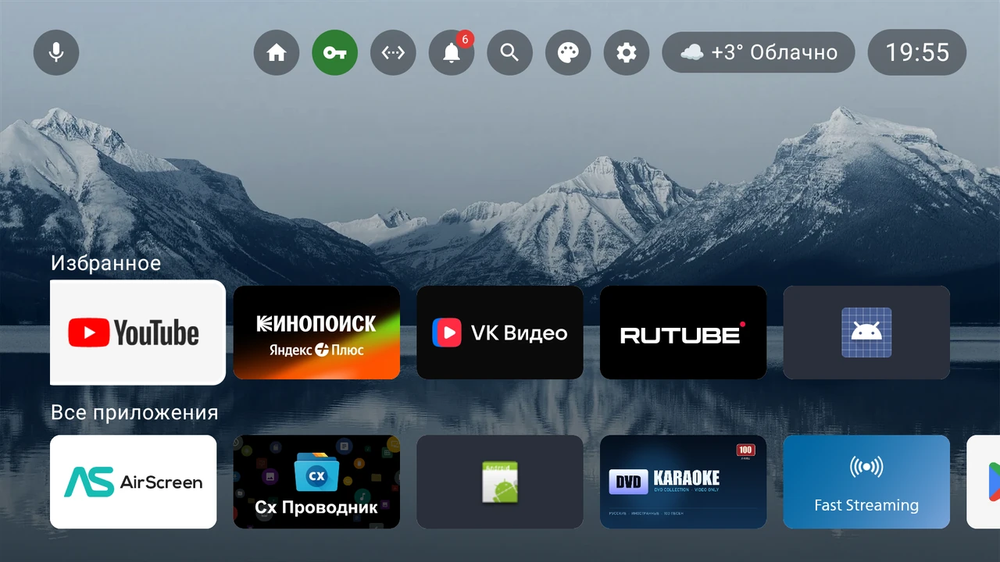
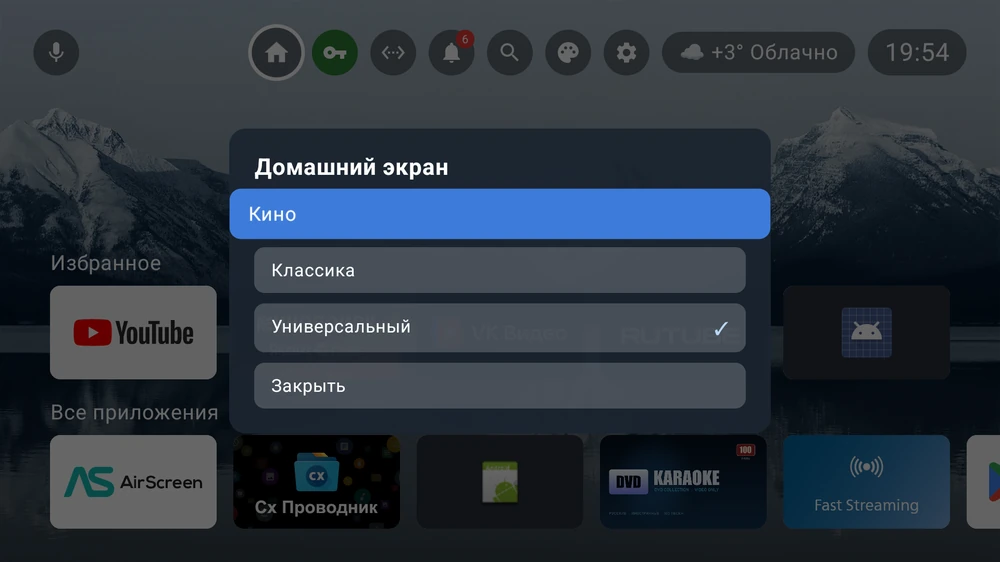
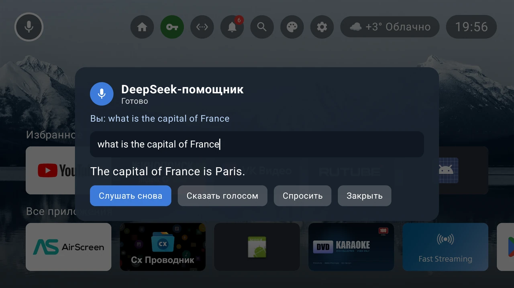
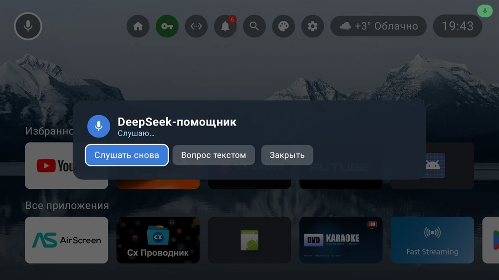
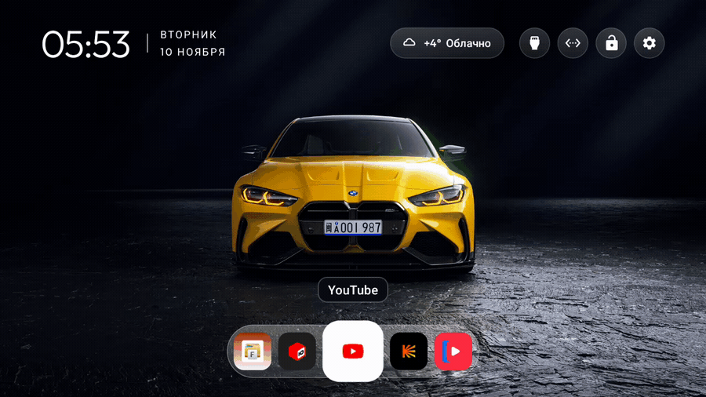
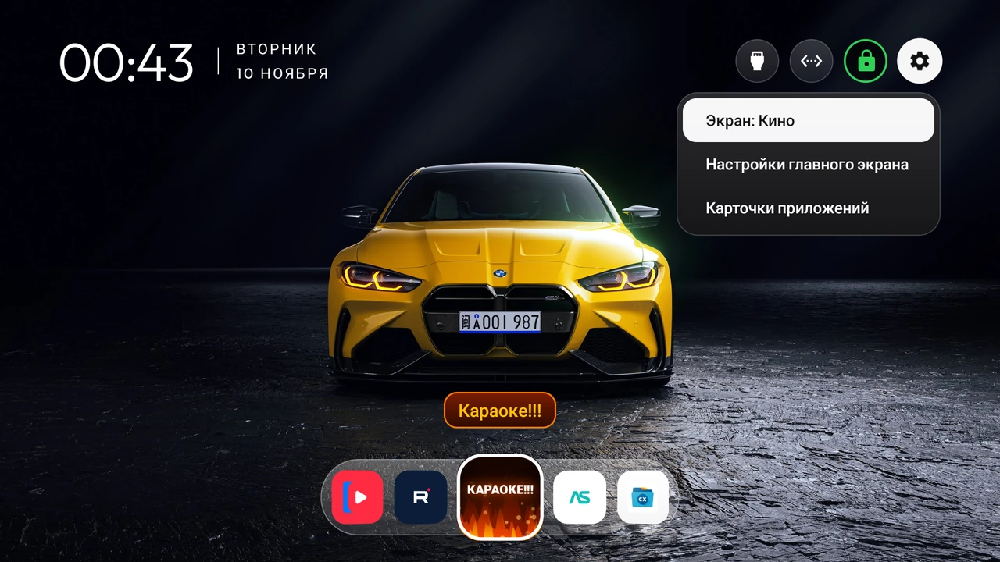
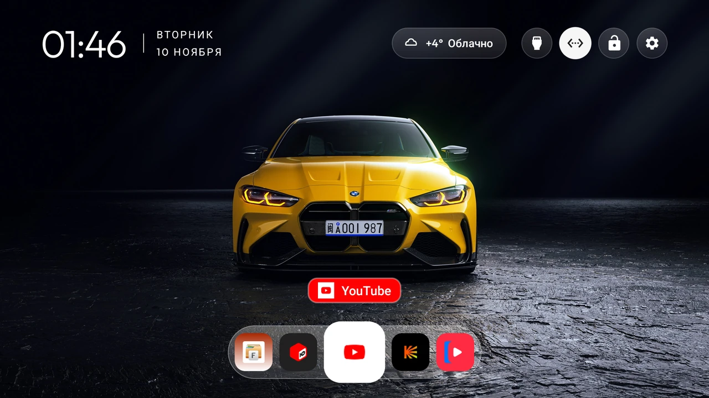

Every installed app in a ring: 7 tiles on screen, and the end of the list eases into the beginning.
“Cinema” from the reference video and “Classic” — the previous CleanYourTV 3.2 home. Switch with the remote, the choice is remembered.
A glass chip: icon, temperature, short description. City by public IP, 30-minute cache.
A round button: green = VPN on, red = off. Opens the configured VPN app.
A soft tick on focus change and a deeper confirm thud on OK. Synthesised in code, no audio files.
“Universal” in the Google TV spirit: photo wallpaper, Favorites and All apps, a VPN pill.
Mic in the top bar: voice commands, DeepSeek answers and TTS. The key stays on the TV.
5.46 % janky frames, 11 ms median, 28 ms p90, 0 missed vsync. The carousel never re-runs layout.


A Google TV style screen built with Jetpack Compose: photo wallpaper, a minimal top bar and two card rows. Runs on any Android TV 8.0+ and TV box; scales for HD, Full HD and 4K.

Top bar: DeepSeek mic, home, VPN (green/red), network, notifications, search, launcher settings, TV settings, weather and the clock.
Rows: “Favorites” and “All apps”; OK opens an app, long OK opens its menu. Settings: wallpapers (lake / sunset / night / auto), sounds, volume, screensaver.
The mic in the top bar opens the assistant. Speech is recognised on the TV, the answer is shown and
spoken. Launcher commands run without the network: “Open YouTube”, “Turn on VPN”, “Weather”, “Louder”,
“Cinema”, “Classic”. Everything else goes to DeepSeek (deepseek-chat).


deepseek_key.txt file pushed with adb. It never goes into the APK or the repository.Apps go round in a ring: the end of the list eases into the beginning, the focused tile grows and gets a white ring. Recorded on the TV (YouTube → Kinopoisk → VK Video → RuTube):

Above the focused tile — a neutral name in the screen's own style. Two variants, switched in the same menu:
Hold OK on the “Settings” button in the header — a menu opens:
The choice is remembered across reboots.

No API keys: the city comes from the public IP (ipwho.is), the forecast from
wttr.in with api.met.no as a fallback. The reading is cached for 30 minutes and shown
immediately when you come back Home.

| Metric | Before (grid) | After (carousel) |
|---|---|---|
| Janky frames | 36.5 % | 5.46 % |
| Median frame | 22 ms | 11 ms |
| 90th percentile | 46 ms | 28 ms |
| Missed vsync | 2 | 0 |
dumpsys gfxinfo.Download the APK and install it over ADB (or from a USB stick with any file manager):
adb connect 192.168.0.39:5555
adb install -r CleanYourTV-ThreeScreens-4.0.4.apkgit clone https://github.com/mosloboev444-hue/tv-cinema-launcher
cd tv-cinema-launcher/launcher
echo "sdk.dir=/path/to/Android/Sdk" > local.properties
./gradlew assembleReleaseNeeds JDK 17+ and Android SDK 34. Patches against a clean upstream 3.4 live in patch/.